← Вернуться к резюме
Bali Go Travel - сооснователь и операционный партнёр (50/50)
27.05.2023 - 01.10.2023 (4 месяца)
Период активной фазы: 27.05.2023 - 01.10.2023 (4 месяца)
Рынок: русскоязычные клиенты на Бали
Формат: авторские приключенческие туры + персонализированное сопровождение и съёмка (включая дрон)
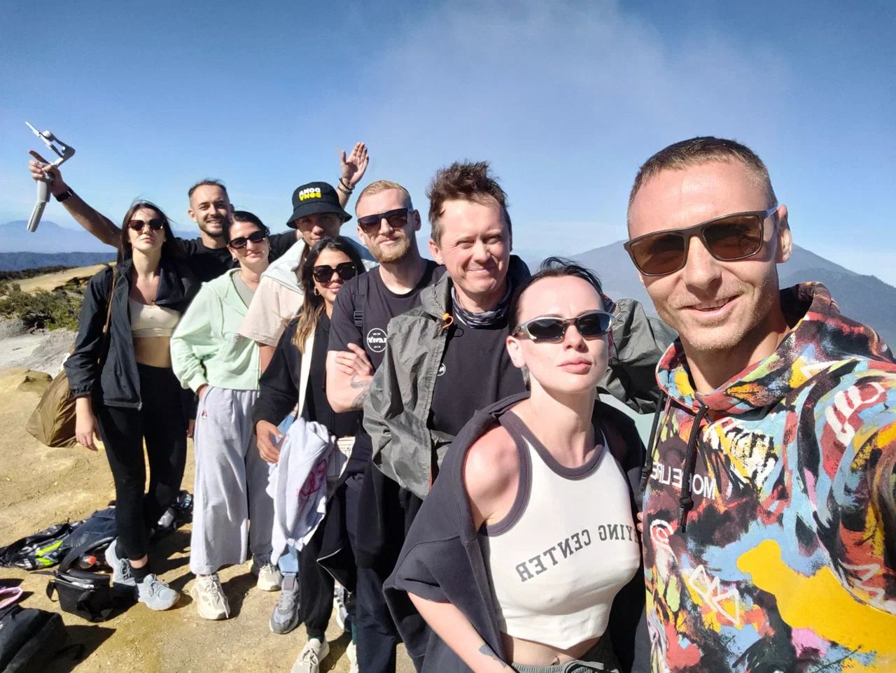
Цели проекта
- Финансовая цель №1: заработать деньги на турах и выйти на устойчивую прибыль.
- Дальше: развитие бренда и масштабирование (идея - занять заметную долю рынка туризма на Бали).
- Конкурентный ориентир по цене/рынку: крупные игроки уровня My Bali Trips (Bali Forum), при этом мы делали ставку на более персонализированный формат и качество сопровождения.
Основные ключевые даты
- 27.05.2023 - моя исследовательская поездка на Яву: разведка маршрута, сбор контактов, проверка логистики и отелей.
- 09.07.2023 - первый тур “Ява 4 дня”: 7 человек.
- 22.07.2023 - второй тур “Ява 4 дня”: 7 человек.
- 01.10.2023 - после расхождения с партнёром я переименовал Bali Go в OXIO Travel и попытался реанимацию проекта, но принял решение заморозить.
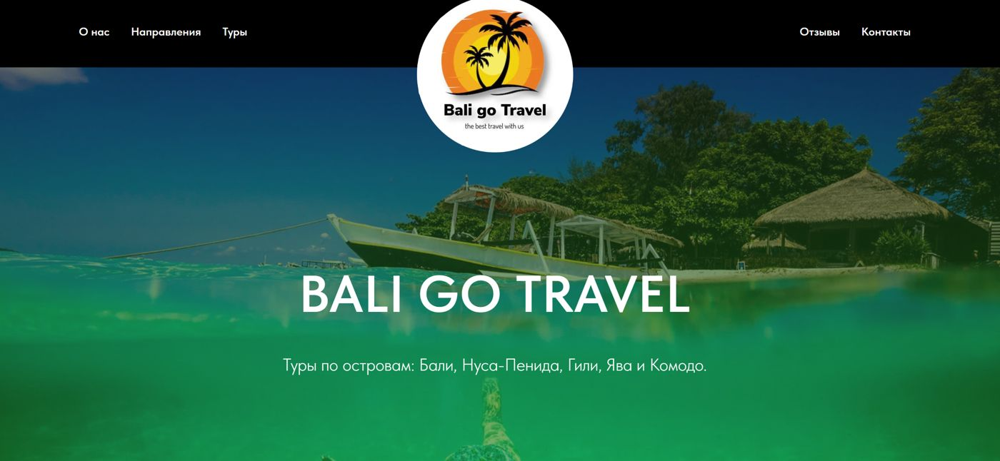
Сайт я не успел доделать. Но успел выложить на сайте упаковку тура на Яву и на Нуса-Пениду.
Ниже ссылки на программы туров по Бали (teletype):
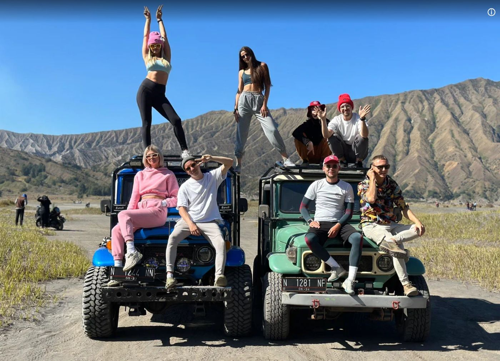
Моя роль в проекте (что я закрывал лично)
Я был равноправным партнёром и отвечал за ключевую “операционную и коммерческую” часть:
-
Финансовая модель и юнит-экономика
Полный просчёт себестоимости туров и маржинальности: транспорт, проживание, входные билеты, мелкие расходы (вплоть до парковок), точки окупаемости и прибыльность от количества участников.
Делал расчёты и контроль в Excel: сколько людей нужно для break-even, сколько остаётся прибыли, где риски по расходам.
-
Упаковка продукта и маркетинг-материалы
Полностью собирал “витрину” продукта: тексты, изображения, мини-страницы/мини-лендинги, описания маршрутов, структура программы, подача преимуществ.
Снимал промо (в том числе дрон) и закладывал контент как часть ценности для клиента (“вау-кадры на память”).
-
Продажи и лидогенерация
Основной объём продаж делал я: примерно 80% закрытий шло через мои коммуникации в Telegram-чатах.
Выстроил “ручную CRM”: статусы лидов, сохранение юзернеймов, ведение этапов сделки, возврат к лидам с разных аккаунтов.
-
Операционка, логистика, партнёры, риск-менеджмент
Исследовал рынок транспорта на Бали и собрал пул лучших вариантов + запасные решения.
На Яве - лично построил маршрут, собрал контакты, договорённости и стандарты качества (отели, водители, локальные подрядчики, входы на локации - вплоть до точек, где люди общаются только по кнопочным телефонам и только на индонезийском).
Всегда держал план Б: альтернативные отели, альтернативные локации, решения на случай закрытий/переполнений/форс-мажоров.
Роль партнёра (для контекста команды)
Партнёр закрывал контент-производство и ведение Instagram: съёмка, монтаж, визуальная подача, плюс совместная разведка локаций и маршрутов.
Условия партнёрства: 50/50 по прибыли и ответственности. Все решения мы принимали совместно.
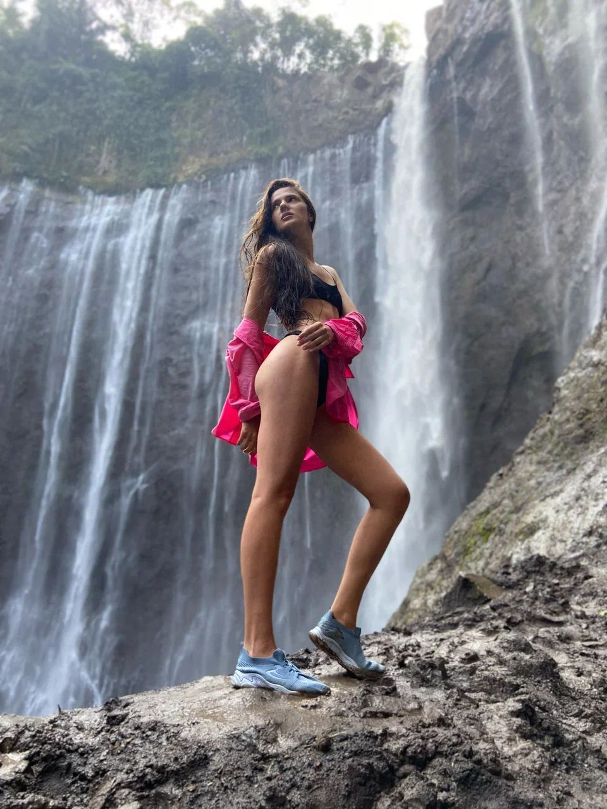
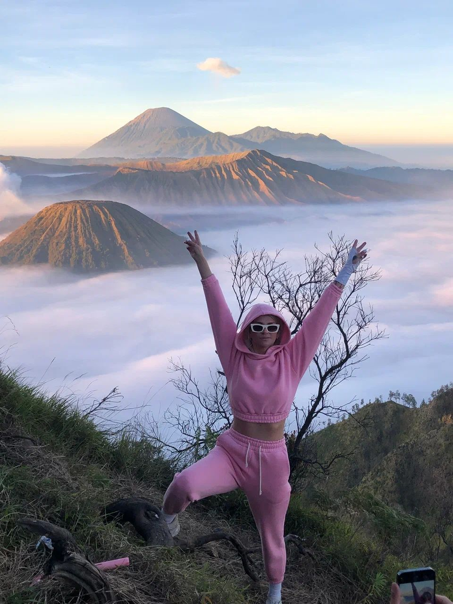
Продукты и направления
Флагман: “Ява 4 дня”
Состав: 2 вулкана + 2 водопада
- Иджен
- Бромо
- Мадокарипура
- Тумпак Севу
Почему флагман: мощное “вау-приключение”, которого нет на Бали.
Принцип: комфортно, безопасно, без суеты, но с эмоциями и эффектом “один раз в жизни”.
Стандарты качества, которые я поднял:
- После опыта работы тур-лидером в аналогичном туре у другого организатора я увидел слабые места (например, ночёвка в хостеле - некомфортно) и пересобрал продукт на более высоком уровне.
- Нашёл лучшие доступные отели на Яве (при реальном дефиците качественного размещения), собрал прямые контакты, меню и прайсы, договорился о бронированиях.
Вау-момент продукта:
- Съёмка на дрон у кратера (когда участник “бежит по кратеру”, а его снимают сверху) - сильный эмоциональный пик и контент, который люди пересматривают годами.
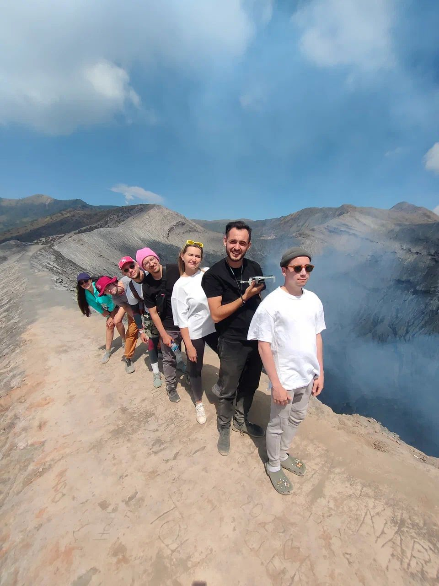
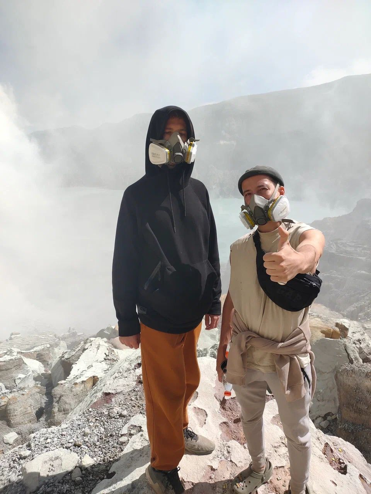
Дополнительные продажи и повторные покупки
- Нуса Пенида (2 дня по авторской программе)
- Гили (сборная поездка)
- Локальные поездки по Бали
- Комодо (срочная организация под запрос)
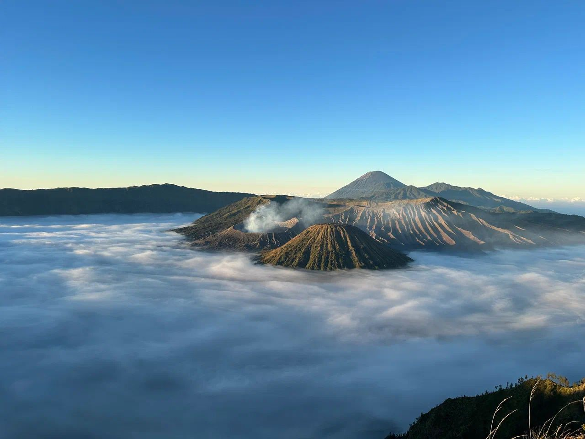
Кейс: Комодо “за 4 дня” (8 человек, бюджет ~7 000$)
Ситуация: семья с детьми + друзья, срочно нужно всё организовать, при этом я сам на Комодо до этого не был.
Риски: ошибиться в авиабилетах/датах отелей/бронированиях (уже был негативный опыт потерь из-за ошибок в датах).
Что сделал:
- За ночь развернул поиск и переговоры: написал ~15 агентствам, найденным через Google Maps на Флоресе.
- Выбрал подрядчика по двум критериям: условия + клиенториентированная коммуникация.
-
Собрал “под ключ”: перелёты, отели, лодка/корабль, программа, тайминги - так, чтобы группа вообще не напрягалась, а просто отдыхала.
Результат: клиент получил “лучший корабль/лучший тур/идеальная программа” в короткий срок.
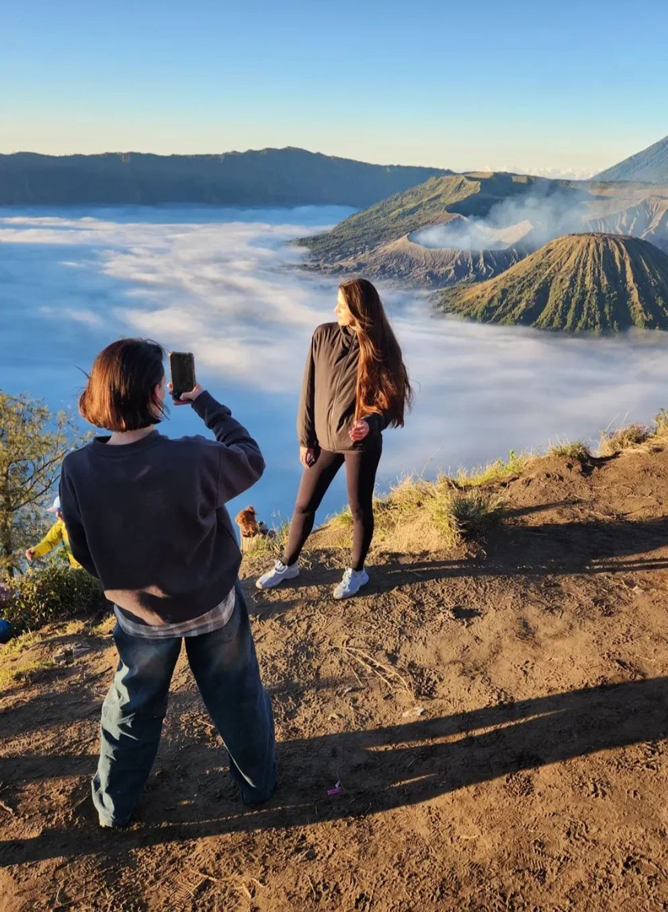
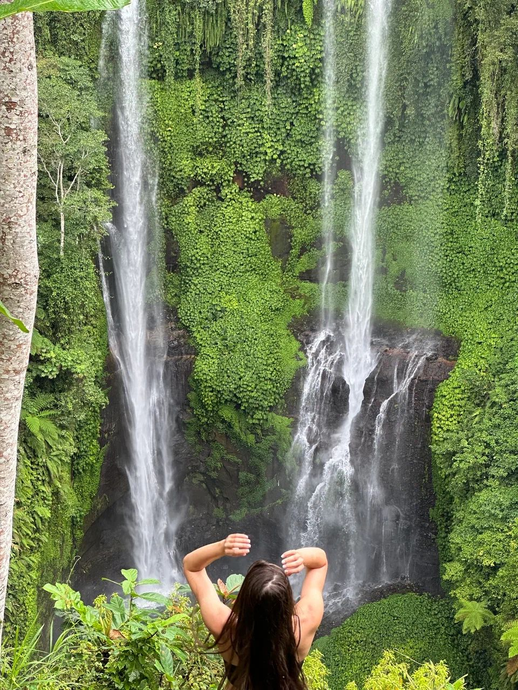
Продажи: как я делал трафик и закрывал сделки
Канал: Telegram-чаты (основной источник лидов).
Механика:
- Создавал несколько аккаунтов, “облагораживал” их и инициировал разговоры в чатах (“собираемся в тур - присоединяйтесь”).
- При реальном интересе переводил человека на рабочий аккаунт и закрывал продажу.
- Аккаунты часто банились → я построил устойчивость через сохранение юзернеймов и повторные касания с других аккаунтов.
- Вёл ручную CRM (заметки) со статусами и историей контакта.
Типовые возражения и отработка:
- “4 дня - слишком долго” → объяснял темп, простоту маршрута, безопасность, продуманность логистики.
- “Страшно покупать через чат” → предлагал видеозвонок/прозрачную коммуникацию.
- “Устану/не пройду” → разбор маршрута и снятие тревожности через детали.
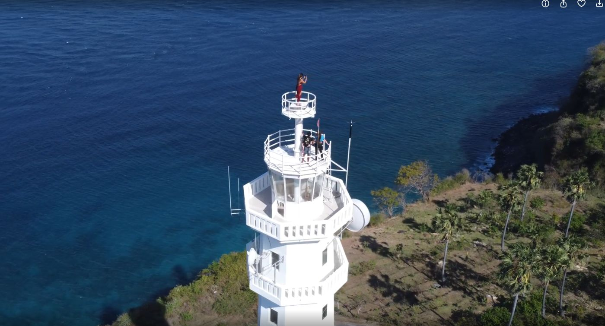
Клиентский опыт и удержание
Почему покупали повторно:
- Мы сами сопровождали группы (оба партнёра) → атмосфера, вовлечённость, поддержка, быстрое решение вопросов.
- Чёткое планирование маршрутов и отсутствие “хаоса” в логистике.
- Контент “по ходу тура” (дрон/фото) - люди чувствовали ценность и эмоции, которые остаются с ними.
Пример сложного клиента (стресс-кейс):
Был участник с нестабильным поведением, который влиял на группу. Я удерживал баланс в группе, долго гасил конфликт мягко, а при прямом хамстве в мой адрес - жёстко обозначил границы, после чего тур стабилизировался.
(Это показывает управление групповой динамикой и границами лидера.)
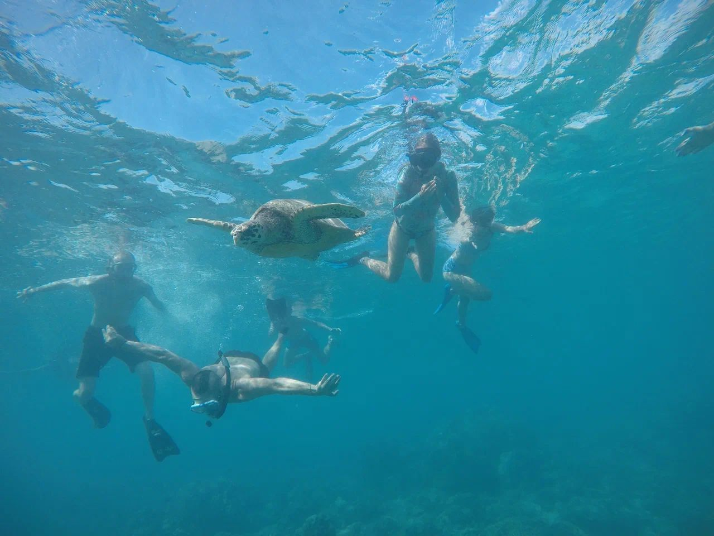
Результаты за 4 месяца
- Запустили агентство “с нуля”: продукт, упаковка, финмодель, логистика, партнёры.
- Провели 2 группы на Яву, получили сильный клиентский опыт и повторные продажи.
- Построили сеть подрядчиков (транспорт на Бали, отели и локальные контакты на Яве, агентства/гиды на Флоресе для Комодо).
- Работали в плюс, пусть и “на поддержание штанов” - но с реальными отзывами, кейсами и подтверждённым качеством.
- Этот опыт стал базой, благодаря которой я легко усилил себя как тур-лидер и интегрировался в Action Vacation.
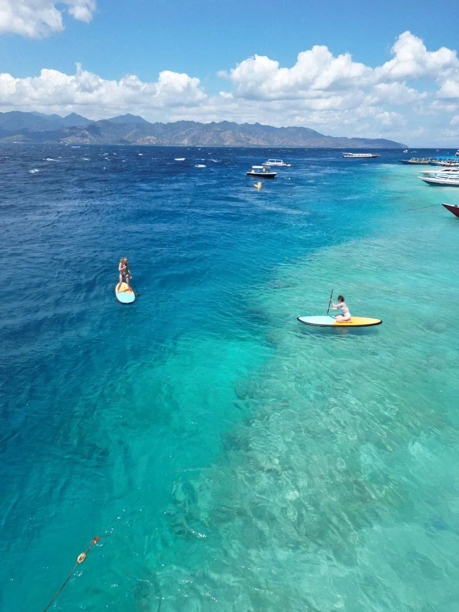
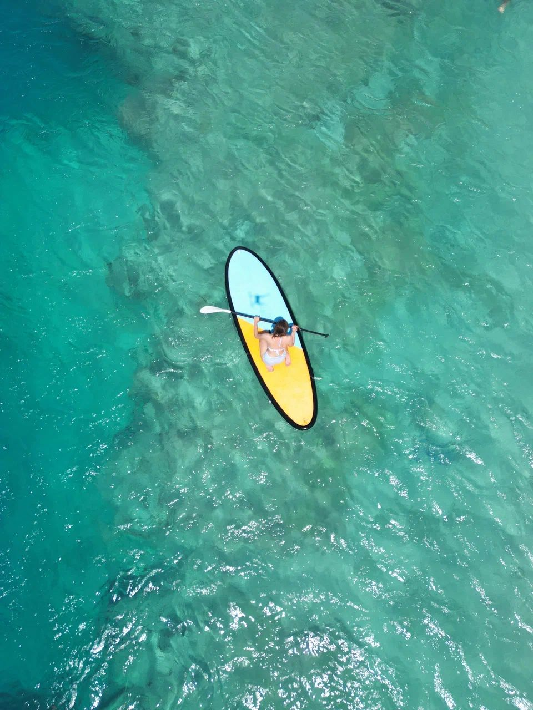
Мои ключевые навыки, которые проявились в Bali Go
Предприниматель / Операционный директор:
- Проектирование продукта: маршрут → стандарты качества → сценарии дня → контроль впечатлений
- Операционная система: логистика, подрядчики, планы Б, контроль рисков
- Финансы и юнит-экономика: себестоимость до мелочей, break-even, маржинальность, ценообразование “под рынок”
- Продажи в полях: лидогенерация, переговоры, отработка возражений, закрытие сделок
- Клиентский сервис и удержание: атмосфера, сопровождение, повторные покупки
- Работа в стрессе: “срочный Комодо за 4 дня” и управление сложными людьми в группе
Инструменты:
- Excel (финмодели, юнит-экономика, расчёт себестоимости, break-even)
- Telegram (лидогенерация, коммуникации, ручная CRM)
- Создание контента: тексты/мини-лендинги, фото/видео, дрон-промо
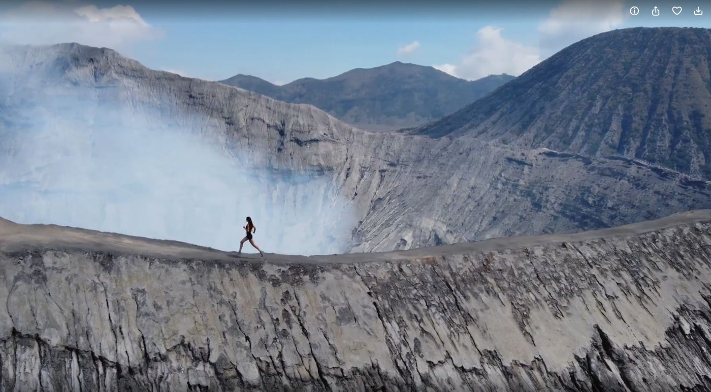
Ошибки и предпринимательские уроки
1) Безопасность активов проекта
Я не предостерёг риск, что партнёр сможет удалить важные ресурсы проекта (рабочие чаты/наработки/Instagram). В итоге активы были потеряны.
Урок: в новых партнёрствах я всегда держу контроль над критическими ресурсами и выстраиваю защиту от потери доступов и данных.
2) Стратегия продукта и проверка спроса
Мы сделали ставку на сильный, маржинальный, но более сложный в продаже продукт (“Ява 4 дня”): он дороже и требует 4 дня времени, из-за чего аудитории сложнее принять решение.
Урок: сначала проверять спрос на более массовых и легко продаваемых продуктах (Бали/Нуса Пенида), а затем масштабировать флагманы.
← Вернуться к резюме